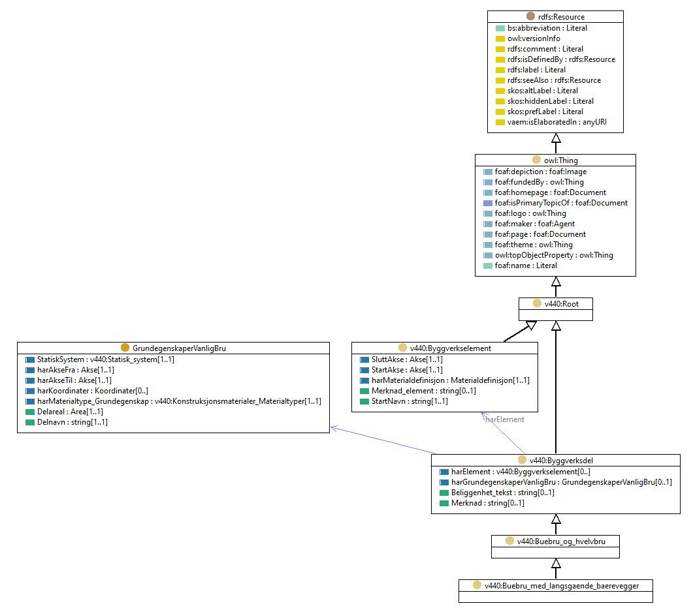

http://rdf.vegdata.no/v440-owl#Buebru_med_langsgaende_baerevegger
Class v440:Buebru_med_langsgaende_baerevegger

v440:avsnitt
V-6.1
v440:kapitel
V-6
v440:kode
55
rdf:type
owl:Class
rdfs:label
Buebru med langsgående bærevegger
rdfs:subClassOf
v440:Buebru_og_hvelvbru
References
as rdfs:subClassOf (
v440:Buebru_med_langsgaende_baerevegger_andre
,
v440:Buebru_med_langsgaende_baerevegger_kassetverrsnitt_tre_flere_vegger
,
v440:Buebru_med_langsgaende_baerevegger_uten_flens
,
v440:Buebru_med_langsgaende_baerevegger_kassetverrsnitt
,
v440:Buebru_med_langsgaende_baerevegger_med_flens
,
v440:Buebru_med_langsgaende_baerevegger_U-tverrsnitt
)
Generated with
TopBraid Composer
by
TopQuadrant, Inc.